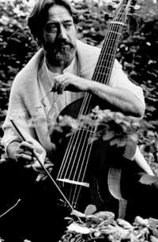

Een week vol muziek
zondag 14 september 2003 | Kultuur
Door een samenloop van omstandigheden kon ik de voorbije zeven dagen genieten van een — voor mij althans — record aantal muzikale voorstellingen. Ik vertik het gewoonlijk de deur uit te gaan om muziek te beluisteren. Ten eerste ben ik ervan overtuigd dat ik in mijn cd-kast de beste uitvoeringen heb liggen van mijn favoriete werken. De kans dat dergelijke prestaties live worden geëvenaard, is bijzonder klein. Ten tweede ben ik verschrikkelijk onverdraagzaam, waardoor het komt dat ik me tijdens concerten te pletter erger aan het minste gehijg, geschuif, gekuch, gefriemel of gefluister van een ander. Zo heb je van die mensen die plotseling het gevecht aangaan met een hardnekkige keelfluim of hun in kraakleder gekruiste benen ostentatief van kant wisselen, terwijl in de muziek zich net de allerhoogste en meest volmaakte toonwisseling aan het voltrekken is, en je zou verwachten dat ieder mens die dit aanhoorde — van welke aard of stand dan ook — zich in pure gelukstranen ter aarde zou werpen om het goddelijke wezen te danken die deze onaardse melodieën aan hen had willen openbaren. Het feit dat ikzelf dat ook niet kan doen tijdens concerten is een reden te meer om thuis te blijven.
Kamerorkest van Heidelberg in Ename
In september 2003 begint het Kamerorkest van Heidelberg aan haar 15de tournee door Groot-Brittannië met concerten in London, Rochester, York, … Ze brachten slechts één concert in Vlaanderen: vorige week zondag in de Sint-Laurentiuskerk in Ename! Omdat ik de onmiddellijke buur ben van dit 1000 jaar oude kerkje, zou ik het mezelf nooit hebben vergeven was ik daar niet bij geweest. Het vierkoppige kamerorkest, o.l.v. de stokoude Klaus Preis, bracht een cocktail virtuoze stukken voor klavier, viool en cello van Vivaldi, Bach, Mozart, Purcell en Pachelbel (‘de onvermijdelijke’). Blijkbaar waren niet veel van mijn dorpsgenoten te vinden voor dit programma, waardoor het een heel intieme voorstelling werd voor slechts een twintigtal geïnteresseerden. Ik zat op de eerste rij – which was nice.
Italiaanse folk in de Capitole
Eén dag later was het de beurt aan Accordone in De Capitole in Gent met een selectie barokke Italiaanse folkmuziek (ik had vrijkaarten). De tenor van het gezelschap, Marco Beasley, kende ik van één van de cd’s van L’Arpeggiata (wondermooie stukjes muziek). De muziek van Accordone leken me echter iets té folk naar mijn smaak. Bovendien heb ik er de hele avond tevergeefs over gedaan om te wennen aan de zangeres. Wat een schelle, overdreven luide stem! Daarmee ruïneer je een porseleinwinkel in drie minuten. De kunsten van de extravagante koeienvel-drummer daarentegen waren een spektakel op zich!
Viola da gamba in de St. Michiels
En dan tenslotte, een live performance van muziek die me intussen zeer nauw aan het hart ligt, Jordi Savall, solo op zijn viola da gamba in de St. Michielskerk. Op het laatste nippertje kon ik nog een ticket bemachtigen. Savall deed zijn ding twee keer na elkaar, ter gelegenheid van OdeGand (een onderdeel van het Festival van Vlaanderen). Hij speelde zowat alles uit zijn nieuwe cd ‘Les Voix Humaines’ (AliaVox), onder andere enkele cellosuites van Bach. Je kan wel raden dat de kerk tot de nokken gevuld was (inclusief hangerige peuters en veertienduizend gsm’s met trilalarm). De ijle klank van de cello had de grootste moeite om dat alles te overstemmen. Muziek recenseren is iets voor vakmensen, net zoals gerechten uit een chique restaurants van commentaar voorzien. Ik vel daarom geen oordeel over de speelkunsten van Savall. Toch moet ik hierbij vertellen dat de cellosuites in de handen van de Nederlander Wispelwey heel wat overtuigender klinken. Zijn dubbel-cd, die ik gekocht heb in januari is ronduit schitterend.
Pracht en praal in de St. Baafs
Oh ja, wie een beetje op de hoogte is van Vlaanderens concertagenda, weet ook dat vorige week de ‘Coronation of King George II’ met alles erop en eraan is nagespeeld in de St. Baafskathedraal. Een geweldig spektakel moet dat geweest zijn… Ik heb me maar als troost de cd gekocht in de Fnac. En hoe toepasselijk, de dirigent heet ‘King’!
Doedelzak in Bilzen
Dit weekend ging het 18e wereldkampioenschap doedelzakspelen door in het Vlaamse dorpje Bilzen. Waarom niet in Schotland? De doedelzak is geen Schots instrument, zoals velen zouden denken, maar vindt zijn oorsprong ergens in Klein-Azië (Irak). Vanaf de 9e eeuw maakte de doedelzak opgang in Europa, maar ook Romeinen kenden het ding al. Bilzen heeft dus evenveel recht op een wereldkampioenschap als hartje Schotland of Baghdad. Het is pas later dat de Schotten de doedelzak integreerden in hun militaire traditie, om de harten van hun eigen volk aan te wakkeren en grondige paniek te zaaien onder de legers van muzikale volkeren zoals de Duitsers of de Italianen. De Schotse doedelzak klinkt daarom ook veel luider dan andere varianten. Ik ben blij dat ik er niet bij was dit weekend (nee, geen fan), maar kom, het is toch een leuk evenement om even te vermelden.

Jordi Savall met viola én bril.
Wouter op 16 september 2003
Frederik, Ik heb wel genoten van Accordone in Capitole. Ook via vrijkaarten was ik er met drie leken in het vak beland. Die schelle stem, daar raakten wij alle vier wél aan gewend. (Zodanig zelfs dat de schuine gedachte “die mag ook wel eens op mijn trekzak spelen”, spontaan boven kwam.)
De Viola da gamba heb ik gemist op OdeGand (wegens mij totaal onbekend). Wel een doorleefde introductie gekregen tot de Fado door ik weet niet wie (maar het zal je niet verbazen dat het een Portugese schone was) in de Vlaamse Opera.